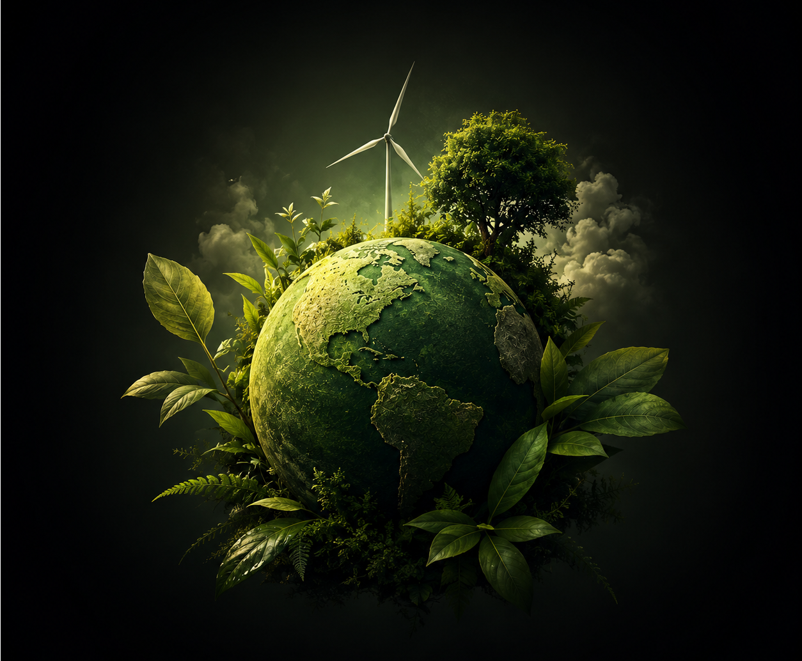

Práticas sustentáveis garantem a saúde do planeta, a produtividade do campo e a qualidade de vida.

A sustentabilidade é um conceito que busca equilibrar o desenvolvimento econômico, a preservação ambiental e o bem-estar social. Seu principal objetivo é garantir que as necessidades da geração atual sejam atendidas sem comprometer a capacidade das futuras gerações de satisfazerem suas próprias necessidades. Na prática, isso significa utilizar recursos naturais de forma responsável, reduzir desperdícios, promover justiça social e incentivar modelos de produção que respeitem os limites do planeta. A sustentabilidade está presente em diversos setores, incluindo agricultura, indústria, energia, transporte e consumo.
A sustentabilidade é fundamental porque os recursos naturais são limitados e a exploração excessiva pode causar consequências graves para os ecossistemas e para a sociedade. Problemas como mudanças climáticas, desmatamento, escassez de água e perda da biodiversidade estão diretamente relacionados ao uso inadequado dos recursos naturais. Ao adotar práticas sustentáveis, é possível reduzir esses impactos, preservar o equilíbrio ambiental e garantir condições adequadas de vida para as futuras gerações.
Recursos renováveis são aqueles que podem se regenerar naturalmente em um período relativamente curto, como a energia solar, a energia eólica, a água e as florestas manejadas de forma sustentável. Já os recursos não renováveis possuem uma capacidade de reposição extremamente lenta ou inexistente na escala de tempo humana, como petróleo, carvão mineral e gás natural. A sustentabilidade busca priorizar o uso consciente dos recursos renováveis e reduzir a dependência dos não renováveis.
A agricultura sustentável utiliza técnicas que permitem produzir alimentos de forma eficiente sem degradar os recursos naturais. Entre essas práticas estão o plantio direto, a rotação de culturas, o controle biológico de pragas e o uso racional da água. Essas estratégias ajudam a conservar o solo, proteger a biodiversidade, reduzir a poluição e diminuir a emissão de gases de efeito estufa. Além disso, contribuem para a manutenção da produtividade agrícola a longo prazo.
Os gases de efeito estufa são substâncias presentes na atmosfera capazes de reter parte do calor proveniente do Sol. Embora esse fenômeno seja natural e essencial para a vida, o aumento excessivo dessas emissões devido às atividades humanas intensifica o aquecimento global. Entre os principais gases estão o dióxido de carbono, o metano e o óxido nitroso. A sustentabilidade busca reduzir essas emissões por meio de energias limpas, eficiência energética e práticas produtivas mais responsáveis.
As energias renováveis são fontes de energia obtidas a partir de recursos naturais que se renovam continuamente, como o Sol, o vento e a água. Diferentemente dos combustíveis fósseis, elas produzem quantidades muito menores de poluentes e gases de efeito estufa. Além dos benefícios ambientais, essas tecnologias ajudam a diversificar a matriz energética, aumentar a segurança no fornecimento de energia e reduzir custos a longo prazo.
O consumo consciente consiste em refletir sobre os impactos ambientais, sociais e econômicos de cada decisão de compra. Isso inclui evitar desperdícios, priorizar produtos sustentáveis, reduzir o consumo desnecessário e valorizar empresas que adotam práticas responsáveis. O consumo consciente não significa deixar de consumir, mas sim fazer escolhas mais equilibradas e alinhadas com a preservação dos recursos naturais e o desenvolvimento sustentável.
A sustentabilidade e a economia estão cada vez mais conectadas. Empresas que adotam práticas sustentáveis frequentemente conseguem reduzir custos operacionais, aumentar a eficiência produtiva e fortalecer sua reputação no mercado. Além disso, consumidores e investidores valorizam organizações comprometidas com a responsabilidade ambiental e social.
A economia circular é um modelo de produção e consumo que busca reduzir ao máximo a geração de resíduos. Em vez de seguir o modelo tradicional de extrair, produzir, consumir e descartar, a economia circular incentiva a reutilização, a reciclagem, a recuperação e o reaproveitamento de materiais. Esse sistema contribui para a redução da exploração de recursos naturais, diminui a quantidade de lixo gerado e promove uma utilização mais eficiente dos recursos disponíveis.
A água é um recurso essencial para a vida e para diversas atividades econômicas, especialmente a agricultura. O uso eficiente da água reduz desperdícios, preserva os mananciais e garante a disponibilidade desse recurso para as futuras gerações. Tecnologias como irrigação inteligente, sensores de umidade do solo e sistemas automatizados permitem aplicar apenas a quantidade necessária de água, aumentando a eficiência produtiva e reduzindo impactos ambientais.
A biodiversidade corresponde à variedade de espécies de plantas, animais, fungos e microrganismos presentes nos ecossistemas. Ela desempenha funções fundamentais, como a polinização das plantas, a fertilidade do solo, a regulação climática e o equilíbrio das cadeias alimentares. A perda da biodiversidade pode comprometer o funcionamento dos ecossistemas e afetar diretamente a qualidade de vida humana. Por isso, sua preservação é considerada um dos pilares da sustentabilidade.
A tecnologia desempenha um papel cada vez mais importante na promoção da sustentabilidade. Sensores, drones, inteligência artificial e análise de dados permitem monitorar recursos naturais com maior precisão e eficiência. Essas ferramentas ajudam a reduzir desperdícios, otimizar o uso de insumos, melhorar a gestão ambiental e aumentar a produtividade sem ampliar os impactos negativos sobre o meio ambiente. Dessa forma, tecnologia e sustentabilidade tornam-se parceiras na construção de soluções inovadoras para os desafios atuais.
O desenvolvimento sustentável é um modelo de crescimento que busca atender às necessidades econômicas e sociais da população sem comprometer os recursos naturais e ambientais. Esse conceito envolve a integração de três dimensões fundamentais: ambiental, social e econômica. Um desenvolvimento é considerado sustentável quando promove prosperidade econômica, qualidade de vida e preservação ambiental de forma equilibrada e duradoura.
As empresas podem implementar diversas ações sustentáveis, como reduzir o consumo de energia, utilizar fontes renováveis, minimizar a geração de resíduos, reciclar materiais e adotar processos produtivos mais eficientes. Além das medidas ambientais, práticas como valorização dos colaboradores, respeito aos direitos humanos e investimentos em projetos sociais também fazem parte da sustentabilidade corporativa. Essas iniciativas fortalecem a imagem da organização e contribuem para um desenvolvimento mais responsável.
Os desafios da sustentabilidade incluem combater as mudanças climáticas, reduzir a poluição, preservar a biodiversidade, garantir segurança alimentar e promover o uso responsável dos recursos naturais. Além disso, é necessário equilibrar o crescimento econômico com a proteção ambiental e reduzir desigualdades sociais em escala global. Superar esses desafios exige a participação conjunta de governos, empresas, instituições de pesquisa e cidadãos, além do desenvolvimento contínuo de tecnologias, políticas públicas e práticas sustentáveis.